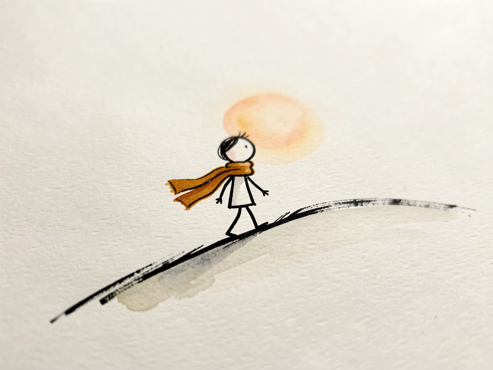
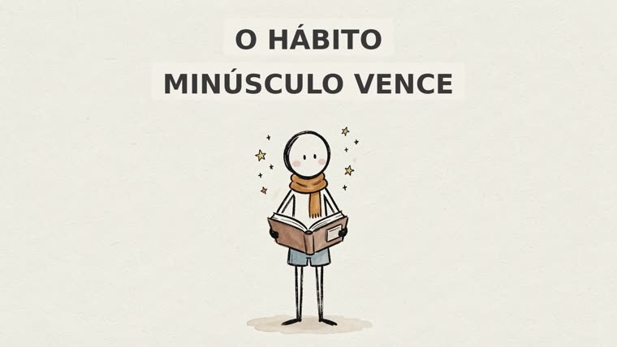
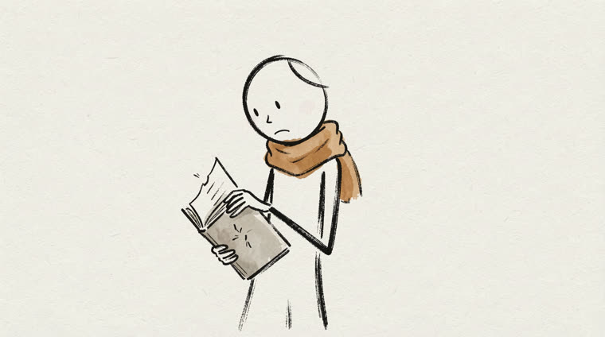
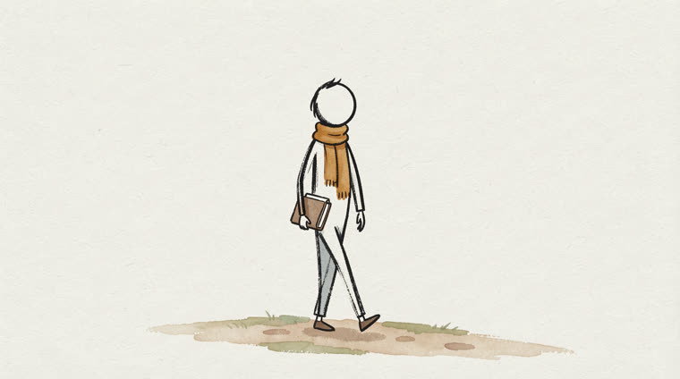
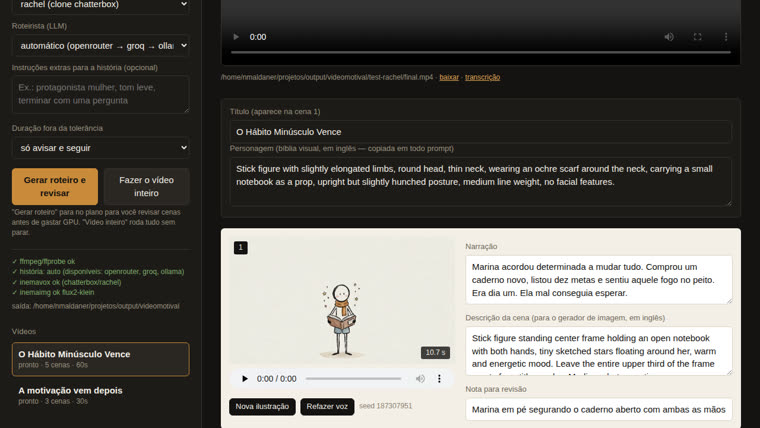

An original story, scene-by-scene narration, consistent stick-figure illustrations, and a 16:9 MP4 assembled with FFmpeg. No need to pay for an image or video generator.

A simple, repeatable format: one motivational story, one voice, illustrations that change as the narration progresses. videomotival automates the whole format, from idea to MP4, with everything running on your machine.
An LLM (OpenRouter, Groq, or local Ollama) writes an original story with a six-part arc and divides it into scenes: narration, visual description, and image prompt.
Each scene becomes a separate MP3 (inemavox, cloned rachel voice). The audio duration controls how long the image stays on screen—no Whisper, no timestamps.
flux2-klein on the local GPU generates one 16:9 illustration per scene in the same style and with the same character. FFmpeg applies a slow zoom, adds the title, and concatenates the final video.
The pipeline is deterministic and resumable: each step saves its files in the run folder and skips anything that already exists. You can stop to review the script before using GPU resources, or run everything at once.
Local web interface (visual scene review, regenerate an illustration, redo voice), CLI for each step, and a Claude Code skill that orchestrates everything from “make a 90 s video about X.”
The pipeline appends the visual style, character bible, and "no text" block to every prompt—not the model. Only scene 1 gets a title, rendered by FFmpeg with the exact text.
~/projetos/output/videomotival/<run>/
├── final.mp4
├── manifest.json
└── work/
├── story.md · transcript.md · scenes.json
├── audio/001.mp3 …
├── images/001.png …
└── video/001.mp4 …Everything runs locally. No keys go into the repository: LLM keys are read at runtime from the machine’s secret files.
ffmpeg/ffprobe to measure, render, and concatenate; Pillow for the title; FastAPI only for the web interface.
pip install -r requirements.txt python3 -m videomotival check
TTS daemon at localhost:8010. Default: chatterbox engine with the cloned rachel voice. For quick tests without a GPU, use the edge engine.
# test voice, no GPU
--engine edge --voice pt-BR-FranciscaNeuralServer at localhost:8000 with the flux2-klein model loaded. Generates 1920x1080 in about 12 seconds per scene.
# story providers, in order STORY_PROVIDER=auto # openrouter → groq → ollama
The same workflow as the original tutorial, step by step, so you can review anything along the way. At the end, one step does it all.
Checks for ffmpeg, both local services, and which story provider has an available key. Never prints secrets.
cd ~/projetos/videomotival python3 -m videomotival check # OK ffmpeg · history: auto · inemavox ok · inemaimg ok
Writes the story, splits it into scenes, and stops at "review". The files are saved in work/ inside the run folder.
python3 -m videomotival create --topic "Pare de esperar a motivação" --duration 75 # → ~/projetos/output/videomotival/<run-id>/work/{story.md, transcript.md, scenes.json}
Edit the narration or visual description directly in scenes.json. O recompose rebuilds the prompts and invalidates only the changed scenes.
python3 -m videomotival recompose --run <run-id>
One MP3 per scene (001.mp3, 002.mp3…), measured with ffprobe. The actual pace in words per minute is recorded and feeds back into the scriptwriter on future runs.
python3 -m videomotival tts --run <run-id> # [probe] 5 narrations: 58.3s measured against a 60s target
One 16:9 image per scene, with the same seed and character bible in every prompt. Did a scene turn out badly? Regenerate just that one with a different seed.
python3 -m videomotival images --run <run-id> python3 -m videomotival regen-image --run <run-id> --scene 3 # new seed for scene 3 only
Each image + audio pair becomes a clip with alternating slow zooms; scene 1 gets the title; the clips are concatenated and the result is verified (1920x1080, audio, duration).
python3 -m videomotival render --run <run-id> [--music trilha.mp3] # → ~/projetos/output/videomotival/<run-id>/final.mp4 + manifest.json
Once the format is dialed in, only the topic changes. This command runs all seven steps without stopping.
python3 -m videomotival create --topic "Por que o progresso pequeno vence a motivação grande" --duration 90 --auto
The web interface shows the steps and scenes with audio and images, and lets you edit the script and regenerate. The Claude Code skill does the same through conversation.
./run.sh web # → http://127.0.0.1:8030 # in Claude Code, inside the project: "Use a skill motivational-story-video: vídeo de 90 s sobre 'Como parar de se comparar'"
Topic “Why small progress beats big motivation”: 5 scenes, rachel voice, 58 seconds measured, produced from start to finish in about four minutes.




The architecture is the same for any niche: business stories, children's tales, historical facts. The scriptwriter and visual style change.